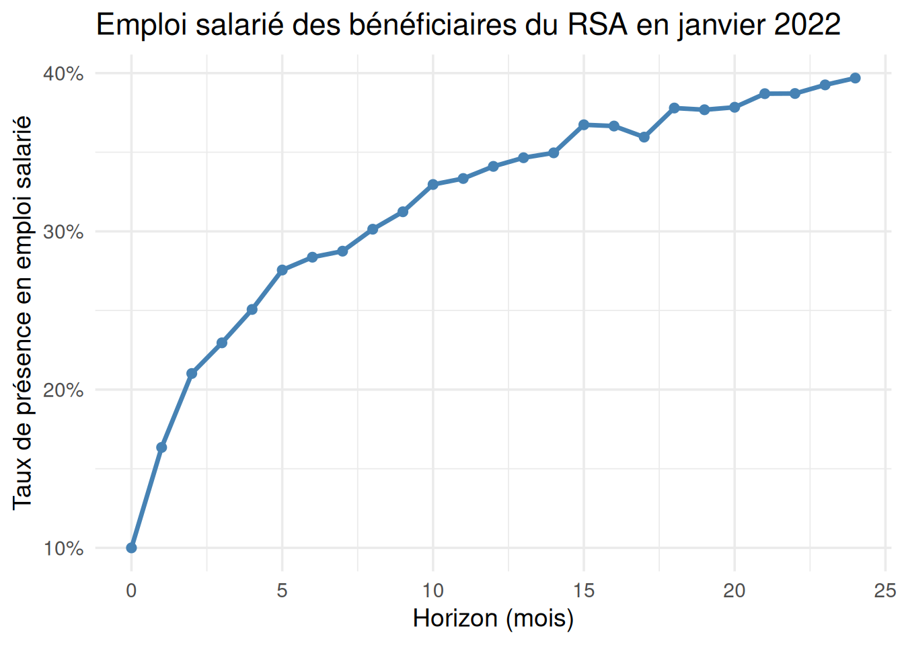

Mesurer l’emploi salarié
Mesurer la présence en emploi salarié
Un individu est considéré comme en emploi salarié s’il remplit les trois conditions suivantes :
il occupe un contrat salarié en cours au moins un jour sur le mois calendaire considéré ;
Ce contrat est un emploi au sens du BIT ce même mois ;
Le salaire déclaré en DSN associé à ce contrat est de bonne qualité statistique : la variable Quali_Salaire_Base vaut 7.
Ces informations sont disponibles dans la table MMO de MiDAS.
De plus, cet individu est classé en emploi durable si :
son contrat est un CDD de plus de 6 mois : nature de contrat 02, 07, 10, 20, 21, 32, 51, 52, 80, 81, 92, 93 ;
ou son contrat est un CDI, quelle que soit la durée déjà observée en CDI : nature de contrat 01, 09, 50, 82, 91.
CautionEmploi intérimaire
Les CDI intérimaires sont regroupés avec les missions d’intérim et ne correspondent pas à de l’emploi durable.
Si un mois donné, un individu occupe à la fois un emploi durable et un emploi non durable, il est comptabilisé en emploi durable.
Ces critères sont ceux retenus dans les publications sur les bénéficiaires du RSA et l’inscription à France Travail, dont les programmes de production à partir des données MiDAS sont disponibles à ce lien.
Exemple : mesurer la présence en emploi salarié de cohortes mensuelles de bénéficiaires du RSA
Pour chaque cohorte mensuelle de bénéficiaires du RSA, le taux de présence en emploi salarié au moins un jour dans le mois est observé 1, 2, 3, …, 24 mois après.
Le but est de construire pour chaque mois de 2022 le graphique suivant (sur données factices) :
Deux versions du même programme sont présentées :
une version vectorielle compatible avec sparklyr et optimisée pour un cluster de calcul ;
une version en boucle for, inadaptée pour spark mais adaptée pour un ordinateur simple en R.
Pour comprendre la nécessité de programmer différemment sur un cluster spark, voir la fiche dédiée.
Repérage dans les données : cluster spark
Etape 0 : connexion au cluster
Cette configuration est la configuration recommandée pour utiliser le cluster spark de la bulle Midares. Elle permet d’effectuer des traitements lourds sur la totalité du champ de Midas.
# Fichier de configuration Spark
conf <- spark_config()
conf["spark.driver.memory"] <- "20g"
conf["spark.executor.memory"] <- "60g"
conf["spark.executor.cores"] <- 4
conf["spark.executor.instances"] <- 2
conf["spark.sql.reduction.limit"] <- 0
conf$spark.driver.maxResultSize <- 0
sc <- spark_connect(master="yarn", config = conf)Etape 1 : charger (lazy) les tables cnaf en une fois
Spark est optimisé pour les traitements vectoriels : il est conseillé de traiter toutes les tables mensuelles de la CNAF comme une unique table complète. Il est beaucoup plus rapide pour spark d’effectuer une fois une opération sur les colonnes d’une table très volumineuse que de segmenter le calcul sur des tables mensuelles.
Spark permet de pointer vers l’ensemble des tables d’un même dossier en une fois, de manière lazy. L’option mergeSchema permet de conserver les variables qui peuvent être absentes dans certaines tables. Par exemple, pour lire l’ensemble des tables passage, il est important de mettre cette option pour garder la variable topconj qui n’est dans les tables qu’à partir de juillet 2018.
# Chemin vers les données MiDAS
chemin_cnaf <- "hdfs:///dataset/MiDAS_v6/Allstat/minsoc/"
# Cohortes de BRSA considérées
cohortes <- sprintf("%02d22",01:12)
# chargement des tables prestations et filtre sur les cohortes mensuelles considérées
table_cnaf_totale_s <- spark_read_parquet(sc, name = "table_cnaf_totale", path = paste0(chemin_cnaf, "cnaf_indiv_*.parquet"), options = list(mergeSchema = "true"), memory = F) %>%
select(id_midas, RSAVERS, MTRSAVER) %>%
mutate(mois = DTREFFRE) %>%
filter(mois >= as.Date("2022-01-01") & mois <= as.Date("2022-12-01"))La table obtenue table_cnaf_totale_s est un spark_data_frame : c’est une table qui contient toutes les tables mensuelles prestations de la CNAF de l’année 2022. Voici un aperçu de la structure de table_cnaf_totale_s:

Etape 2 : repérer les bénéficiaires du RSA
Seuls les bénéficiaires du RSA qui perçoivent effectivement un montant de RSA non nul un mois donné sont conservés dans le champ.
beneficiaires_rsa <- table_cnaf_totale_s %>%
filter(RSAVERS %in% c("RSA droit commun", "RSA droit local", "RSA jeune", "RSA expérimental",
"C", "L", "J", "E") & MTRSAVER > 0) %>%
distinct(id_midas, mois) %>%
sdf_register("beneficiaires_rsa")
tbl_cache(sc, "beneficiaires_rsa")Cette table de champ est persistée en mémoire RAM par spark à l’aide de la fonction tbl_cache().
La table beneficiaires_rsa a la structure suivante :

Etape 3 : empiler et pivoter les MMO
De même pour les tables annuelles des MMO, il est plus efficient de les empiler avant d’effectuer tout calcul.
CautionVariables d’emploi BIT dans les MMO
Chaque table annuelle ne contient l’indicatrice d’emploi BIT que pour les mois de l’année correspondant à la table.
En empilant les tables annuelles des MMO, il ne faut pas dédoublonner les lignes pour les mêmes contrats : chaque ligne de chaque table annuelle contient des informations à différentes périodes temporelles pour l’emploi BIT.
La table obtenue MMO_tot contient une ligne par mois d’emploi BIT pour chaque contrat, elle a la structure suivante :

Elle ne contient que les contrats dont le salaire en DSN est bien déclarée (Quali_Salaire_Base == 7).
chemin_mmo <- "C:/Users/Public/Documents/MiDAS_parquet/Vague 6/MMO/"
MMO_2022 <- spark_read_parquet(sc, paste0(chemin_mmo, "MMO_2_2022_M6.parquet"), memory = FALSE)
MMO_2023 <- spark_read_parquet(sc, paste0(chemin_mmo, "MMO_2_2023_M6.parquet"), memory = FALSE)
MMO_2024 <- spark_read_parquet(sc, paste0(chemin_mmo, "MMO_2_2024_M6.parquet"), memory = FALSE)
MMO_tot <- sdf_bind_rows(MMO_2022, MMO_2023, MMO_2024) %>% #Empiler les tables annuelles pour travailler en vectoriel
filter(Quali_Salaire_Base == 7) %>% # uniquement les contrats dont le salaire est bien déclaré
mutate(FinCTT = as.Date(FinCTT), DebutCTT = as.Date(DebutCTT)) %>%
mutate(type_contrat = case_when(Nature %in% c("01", "09", "50", "82", "91") ~ "CDI",
Nature %in% c("02", "07", "10", "20", "21", "32", "51", "52", "80", "81", "92", "93") ~ "CDD",
Nature %in% c("03", "08") ~ "interim",
Nature %in% c("29", "53", "60", "70", "89", "90") ~ "autre",
TRUE ~ NA)) %>%
filter(!is.na(DebutCTT)) %>%
mutate(duree_ctt = DATEDIFF(FinCTT,DebutCTT) + 1,
emploi_d = ifelse((type_contrat == "CDD" & (duree_ctt > 180 | is.na(duree_ctt))) | type_contrat == "CDI", 1, 0)) %>% # définition de l'emploi durable : CDD de plus de 6 mois ou CDI
select(id_midas, DebutCTT, FinCTT, starts_with("emploi_bit"), emploi_d) Etape 4 : pivot pour filtrer sur les mois d’emploi BIT
La table MMO_tot contient une information mensuelle sur l’emploi BIT en colonne. Comme la présence en emploi salarié est une présence au sens du BIT, il est plus pratique de pivoter la table (passage au format long) pour appliquer le filtre sur l’emploi BIT.
La table MMO_pivot obtenue est la suivante :

MMO_pivot <- MMO_tot %>%
pivot_longer(cols = starts_with("emploi_bit_"), names_to = "date_emploi_bit", names_prefix = "emploi_bit_", values_to = "emploi_bit") %>%
# passage des variables emploi bit en ligne contrat X mois avec une indicatrice
# pour chaque mois qui indique si le contrat correspond à de l'emploi bit sur le mois
mutate(date_emploi_bit_deb = as.Date(paste0(substr(date_emploi_bit,1,4), "-", substr(date_emploi_bit,6,7), "-01")),
date_emploi_bit_fin = last_day(date_emploi_bit_deb)) %>%
filter(emploi_bit == 1) # on ne conserve que les lignes contrats X mois où les contrats sont en emploi BITEtape 5 : repérer les horizons
Pour chaque bénéficiaire du RSA un mois donné, on calcule le mois d’horizon n, jusqu’à l’horizon 24. La structure de la table horizon_brsa est la suivante :

library(rlang)
# Table des horizons qu'on souhaite considérer
horizon_num <- data.frame(horizon = c(0:24))
horizon_num_s <- copy_to(sc, horizon_num)
# Produit cartésien de chaque bénéficiaire du RSA un mois donné avec les 24 horizons observés
horizon_brsa <- beneficiaires_rsa %>%
cross_join(horizon_num_s) %>%
mutate(date_horizon = sql("add_months(mois, horizon)")) # calcul du mois calendaire d'horizon : si on considère un BRSA en janvier 2022, l'horizon 2 est mars 2022Etape 6 : récupérer les contrats en cours au mois d’horizon
Les contrats salariés en cours au mois d’horizon n sont ajoutés à la table. Un individu peut avoir pour un même mois d’horizon plusieurs contrats en cours. L’information est résumée : si un individu a au moins un contrat en cours le mois d’horizon n, la variable en_emploi vaut 1, sinon 0. La structure de table_finale est la suivante :

# Jointure avec les mois d'emploi BIT
ajout_mois_emploi_bit <- horizon_brsa %>%
left_join(MMO_pivot, sql_on = "LHS.id_midas = RHS.id_midas
AND RHS.date_emploi_bit_deb <= LHS.date_horizon
AND RHS.date_emploi_bit_fin >= LHS.date_horizon",
keep = TRUE) %>% # pour chaque horizon, on ne conserve que les contrats d'emploi BIT du même mois
select(-id_midas_y) %>%
rename(id_midas = id_midas_x) %>%
mutate(en_emploi = ifelse(!is.na(DebutCTT), 1, 0), # si un contrat est retrouvé, l'individu est en emploi salarié le mois d'horizon considéré
en_emploi_durable = ifelse(!is.na(DebutCTT) & emploi_d == 1, 1, 0)) %>%
group_by(id_midas, KROD3, horizon) %>% # on dédoublonne : plusieurs contrats emploi BIT peuvent être retrouvés pour un individu un même mois d'horizon
summarise(en_emploi = ifelse(sum(en_emploi) >= 1, 1, 0),
en_emploi_durable = ifelse(sum(en_emploi_durable) >= 1, 1, 0)) %>%
ungroup %>%
sdf_register(name = "ajout_mois_emploi_bit")
tbl_cache(sc, name = "ajout_mois_emploi_bit")
# Ajout à la table individuelle de bénéficiaires mensuels du RSA
table_finale <- beneficiaires_rsa %>%
distinct(id_midas, KROD3, mois) %>%
left_join(ajout_mois_emploi_bit, by = c("id_midas", "KROD3")) Etape 7 : Part de présence en emploi par cohorte mensuelle
Le format de table_finale est long : une ligne correspond à un mois d’horizon considéré par rapport au mois de perception du RSA de l’individu. Ce format est pratique pour représenter des taux de présence en emploi salarié avec ggplot2. Le programme ci-dessous permet de tracer le profil de présence en emploi salarié par cohorte mensuelle de bénéficiaires du RSA.
prop_re <- table_finale %>%
group_by(mois, horizon) %>%
summarise(eff = sum(en_emploi),
tot = n()) %>%
mutate(prop = eff*100/tot) %>%
collect() %>%
arrange(mois)
mois <- prop_re %>% pull(mois)
for (i in seq_along(mois)){
c0 <- mois[i]
df_c <- prop_re %>%
filter(mois == c0) %>%
arrange(horizon)
p <- ggplot(df_c, aes(x = horizon, y = prop)) +
geom_line(size = 0.9) +
geom_point(size = 1.8) +
scale_x_continuous(breaks = 1:24) +
labs(title = paste0("Taux de présence en emploi - cohorte ", c0),
x = "Horizon (mois)",
y = "Présence en contrat salarié") +
theme_minimal(base_size=12) +
theme(panel.grid.minor = element_blank())
f <- paste0(path_resultat, "taux_re_cohorte_", c0, ".png")
ggsave(filename = f, plot = p, width = 7, height = 4.2, dpi = 150, units = "in")
}Conclusion
Pour calculer le retour à l’emploi, des colonnes (=vecteurs) de dates sont comparés entre eux, ce qui permet de calculer pour toute cohorte et tout horizon la présence en emploi en une unique opération. Même si joindre l’ensemble des contrats salariés à l’ensemble des mois d’horizon peut donner une table avec plusieurs millions de lignes, spark est tout à fait adapté pour traiter des données aussi volumineuses avec des opérations vectorielles et des jointures optimisées, si le programme limite les shuffles.
Programmation en cas de ressources informatiques limitées
Voici les étapes :
une cohorte mensuelle de bénéficiaires du RSA est considérée à chaque itération de la boucle for principale : seule la table mensuelle CNAF du mois en question est chargée avec
arrow, filtrée sur les bénéficiaires du RSA puis collectée en mémoireUne autre boucle for permet pour chaque cohorte mensuelle de bénéficiaires du RSA de repérer la présence en emploi salairé à chaque horizon : pour chaque horizon sur les 24 considérés, la table MMO annuelle correspondante est chargée avec
arrow, filtrée sur les contrats du mois d’horizon considéré, et appariée avec la cohorte de bénéficiaire du RSA.Pour supprimer les tables de la mémoire à chaque itération, seuls les effectifs de bénéficiaires du RSA et de bénéficiaires présents en emploi sont conservés à chaque itération.
# Chemin vers les données MiDAS
chemin_cnaf <- "C:/Users/Public/Documents/MiDAS_parquet/Vague 6/Allstat/minsoc/"
chemin_mmo <- "C:/Users/Public/Documents/MiDAS_parquet/Vague 6/MMO/"
# Cohortes de BRSA considérées
cohortes <- sprintf("%02d22",01:12)
dates_cohortes <- seq(as.Date("2022-01-01"),as.Date("2022-12-01"), by = "month")
resultats <- list()
for(c in seq_along(cohortes)) {
nom_var_cohorte <- cohortes[c]
debut_cohorte <- dates_cohortes[c]
fin_observation <- debut_cohorte %m+% months(23)
dates_obs <- seq(debut_cohorte,fin_observation, by = "month")
dates_obs_fm <- as.Date(format(dates_obs + 31, "%Y-%m-01")) - 1
dates_obs_bit <- format(dates_obs,"%Y_%m")
table_cnaf <- open_dataset(paste0(chemin_cnaf, "cnaf_indiv_", nom_var_cohorte, ".parquet"))
brsa_mois <- table_cnaf %>%
filter(RSAVERS %in% c("RSA droit commun", "RSA droit local", "RSA jeune", "RSA expérimental",
"C", "L", "J", "E") & MTRSAVER != 0) %>%
distinct(id_midas) %>%
collect()
for(i in seq_along(dates_obs_fm)) {
deb_mois <- dates_obs[i]
fin_mois <- dates_obs_fm[i]
mois_bit <- paste0("emploi_bit_",dates_obs_bit[i])
annee_mmo <- substr(fin_mois, 1, 4)
MMO_annee <- open_dataset(paste0(chemin_mmo, "MMO_2_", annee_mmo, "_M6.parquet"))
MMO_mois <- MMO_annee %>%
mutate(DebutCTT = as.Date(DebutCTT),
FinCTT = as.Date(FinCTT)) %>%
filter(DebutCTT <= fin_mois & (is.na(FinCTT) | FinCTT >= deb_mois)
& .data[[mois_bit]] == 1 & Quali_Salaire_Base == 7) %>%
mutate(type_contrat = case_when(Nature %in% c("01", "09", "50", "82", "91") ~ "CDI",
Nature %in% c("02", "07", "10", "20", "21", "32", "51", "52", "80", "81", "92", "93") ~ "CDD",
Nature %in% c("03", "08") ~ "interim",
Nature %in% c("29", "53", "60", "70", "89", "90") ~ "autre",
TRUE ~ "autres")) %>%
select(id_midas, DebutCTT, FinCTT, .data[[mois_bit]], type_contrat) %>%
collect() %>%
mutate(duree_ctt = FinCTT - DebutCTT + 1,
emploi_d = ifelse((type_contrat == "CDD" & (duree_ctt > 180 |is.na(duree_ctt))) | type_contrat == "CDI", 1, 0))
brsa_contrat <- brsa_mois %>%
inner_join(MMO_mois, by = c("id_midas"))
rm(MMO_mois)
gc()
eff_en_emploi <- brsa_contrat %>%
summarise(count = n_distinct(id_midas)) %>%
pull(count)
eff_en_emploi_d <- brsa_contrat %>%
filter(emploi_d == 1) %>%
summarise(count = n_distinct(id_midas)) %>%
pull(count)
eff_tot <- brsa_mois %>%
summarise(eff_tot = n_distinct(id_midas)) %>%
pull(eff_tot)
resultats[[length(resultats) + 1]] <- tibble(cohorte = format(debut_cohorte,"%Y_%m"),
mois_obs = format(dates_obs[i],"%Y_%m"),
taux_emploi = round(eff_en_emploi / eff_tot * 100),
taux_emploi_d = round(eff_en_emploi_d / eff_tot * 100))
}
rm(brsa_contrat)
rm(brsa_mois)
gc()
}